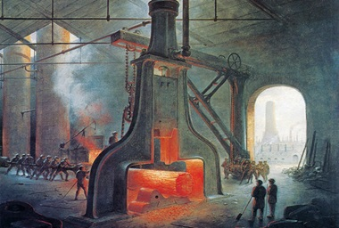
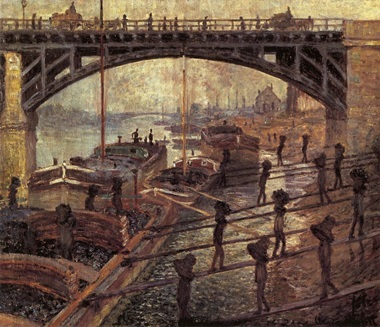
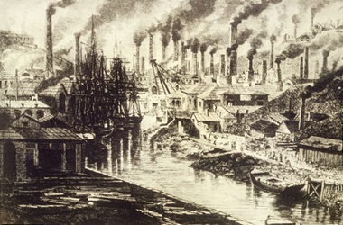
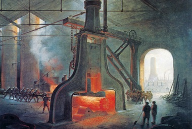
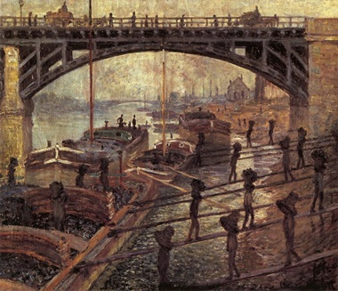
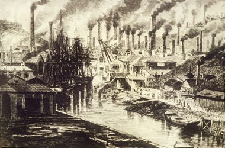

La popolazione europea torna a crescere
Nel periodo che va dagli ultimi decenni del Seicento al XVIII secolo, la popolazione europea, dopo un periodo di declino, ci fù una crescita demografica . In circa 140 anni, la popolazione quasi raddoppiò, passando dai circa 100 milioni nel 1660 ai 187 milioni nel 1800. Tuttavia, questa crescita non fu uniforme, con ritmi più accelerati in Inghilterra e più lenti nei Paesi dell'Europa centrale, orientale e mediterranea.
L’agricoltura inglese è all’avanguardia
Nel primo Settecento, l'Inghilterra spiccava come la nazione più ricca d'Europa, parte della sua prosperità derivava dall'agricoltura. Le campagne inglesi subirono notevoli trasformazioni, con la privatizzazione delle terre comuni e la creazione di campi recintati Nel 18° secolo, in Inghilterra, si verificarono processi di "enclosure" (recinzione) delle terre comuni. Questo coinvolgeva la chiusura di terre condivise per crearne di private. Tale pratica portò a cambiamenti nella struttura agricola e sociale, contribuendo alla transizione da un'economia prevalentemente agricola a una più orientata all'allevamento su scala maggiore. . Questi nuovi proprietari promossero pratiche agricole moderne, introducendo la rotazione triennale e coltivando piante da foraggio nelle aree lasciate alla natura. Nel Settecento, l'adozione della rotazione quadriennale e la selezione accurata degli animali d'allevamento migliorarono la produttività, ottenendo animali più robusti e prolifici. Queste pratiche contribuirono a un notevole miglioramento sia nell'agricoltura che nell'allevamento in Inghilterra e successivamente in altri Paesi europei.
La rivoluzione agricola prepara e favorisce la trasformazione dell’inghilterra
Nel Settecento, la maggior parte delle terre agricole in Inghilterra era nelle mani di grandi o medi proprietari, spesso aristocratici. A differenza di molti nobili europei, gli aristocratici inglesi si dimostrarono imprenditori, investendo capitali accumulati grazie al progresso delle loro moderne e redditizie aziende agricole. Questi aristocratici finanziarono la costruzione di strade e canali, avviarono manifatture artigianali che si trasformarono in industrie e sostennero le attività commerciali oltreoceano. Queste iniziative generavano ulteriore ricchezza da reinvestire.
La ricchezza dell’inghilterra è legata anche ai commerci
Nel Settecento, l'Inghilterra dominava gli oceani, superando altre potenze marinare europee come l'Olanda e la Francia, ottenendo anche il monopolio Nel 18° secolo, si osservarono forme di monopolio in Inghilterra, come ad esempio la Compagnia delle Indie Orientali. Queste aziende detenevano il controllo esclusivo su determinate merci o territori, limitando la concorrenza. Tuttavia, i monopolii di questo periodo erano meno diffusi e influenti rispetto a quelli che caratterizzarono la successiva Rivoluzione Industriale nel 19° secolo. sulla tratta degli schiavi con le colonie spagnole nel 1713. Con una flotta superiore in numero e potenza, l'Inghilterra garantiva approvvigionamenti efficienti di materie prime dalle colonie e poteva commercializzare i prodotti necessari alle colonie ma fabbricati solo in patria,come tessuti di cotone. In risposta alla crescente domanda interna, l'Inghilterra intensificava la produzione di cibo, stoffe e abbigliamento. Con l'aumento della popolazione, le richieste dei beni di consumo Nel 18° secolo, la richiesta di beni di consumo aumentò significativamente. Miglioramenti agricoli, avanzamenti nella produzione e l'apertura di nuove colonie contribuirono a un aumento della disponibilità di merci. La crescita demografica e cambiamenti culturali favorirono la domanda di beni di lusso, mentre l'emergere di una classe media con maggiori risorse finanziarie contribuì al cambiamento verso una società più orientata al consumo, anticipando la Rivoluzione Industriale del 19° secolo. aumentarono a pari passo.
Il sistema del lavoro a domicilio non basta più
Durante il Medioevo, la trasformazione delle materie prime come la lana in prodotti finiti, come tessuti, avveniva principalmente nelle botteghe degli artigiani. Tuttavia, dalla fine del Cinquecento, in Inghilterra si sviluppò il lavoro a domicilio, dove famiglie contadine ricevevano materie prime e occasionalmente gli strumenti da mercanti cittadini. Il lavoro veniva svolto nelle case contadine nel tempo libero dalla coltivazione dei campi, coinvolgendo uomini nel tessere, donne nel filare e anziani e bambini nell'avvolgere il filo. Nonostante i compensi fossero modesti, i contadini accettavano la situazione, portando a vantaggi significativi per i mercanti. Nel Settecento, né gli artigiani tessili nelle botteghe né i tessitori a domicilio potevano soddisfare la crescente domanda della popolazione e delle colonie. Era necessario incrementare la produttività, sostituendo vecchi metodi di lavoro con nuovi che consentissero una produzione più elevata, in minor tempo e senza aumenti di costi.
L’industria tessile si innova con efficaci invenzioni
Nel Settecento, la crescente domanda stimolò una serie di invenzioni, molte ideate da artigiani geniali, che rivoluzionarono il settore tessile.
La navetta volante
Durante la Rivoluzione Industriale, l'efficienza della produzione tessile ebbe un notevole impulso grazie a un'invenzione rivoluzionaria: la spoletta volante.
Questo dispositivo, sviluppato da menti ingegnose del tempo, trasformò radicalmente il processo di tessitura. Sostituendo le spolette tradizionali, la spoletta volante,
alimentata da una lancetta o un vettore aereo, accelerò notevolmente la velocità di tessitura. Questa innovazione non solo aumentò la produttività, ma anche ridusse i costi di produzione, contribuendo in modo significativo allo sviluppo dell'industria tessile durante un'epoca di profondi cambiamenti industriali.  di John Kay, brevettata nel 1733, fu una delle prime innovazioni significative, migliorando l'efficienza del telaio.
I telai che la adottarono divennero così veloci che richiedevano il lavoro quotidiano di 7-8 operai per rifornirli di filo.
Anche i filatoi furono modernizzati, accelerando il processo. In breve tempo, filatura e tessitura furono completamente meccanizzate,
consentendo a un solo operaio assistito da un ragazzo, nel 1833, di sorvegliare contemporaneamente 4 telai e produrre 20 volte di più rispetto a un tessitore manuale.
di John Kay, brevettata nel 1733, fu una delle prime innovazioni significative, migliorando l'efficienza del telaio.
I telai che la adottarono divennero così veloci che richiedevano il lavoro quotidiano di 7-8 operai per rifornirli di filo.
Anche i filatoi furono modernizzati, accelerando il processo. In breve tempo, filatura e tessitura furono completamente meccanizzate,
consentendo a un solo operaio assistito da un ragazzo, nel 1833, di sorvegliare contemporaneamente 4 telai e produrre 20 volte di più rispetto a un tessitore manuale.
Carbone, acqua e vapore muovono le nuove macchine
Per azionare i nuovi, complessi macchinari, la forza manuale degli operai non era più sufficiente fu quindi necessario servirsi di nuove forme di energia. Si ricorse prima all'energia idraulica: gli stabilimenti cominciarono a sorgere preferibilmen te in campagna, accanto a torrenti e a salti d'acqua, la cui forza era sfruttata per mezzo di un mulino. Non mancavano però gli inconvenienti. L'energia idraulica infatti era potente, ma non sempre disponibile, perché i torrenti potevano prosciugarsi (d'estate) o gelare (d'inverno). Si tentò allora di sfruttare il vapore: con la rudimentale macchina a vapore costruita da Thomas Newcomen nel 1705, per esempio, si bruciava carbone per bollire acqua di una caldaia e produrre del vapore in pressione che, opportunamente regolato e diretto, azionava i macchinari collegati. In altre parole, questa macchina trasformava l'energia termica in energia meccanica, cioè sfruttava il calore per produrre movimento. Tuttavia, la macchina di Newcomen consumava molto combustibile e dunque aveva costi molto alti. La soluzione a questo problema fu trovata dallo scozzese James Watt, che nel 1769 la perfezionò, rendendola più efficiente e molto più economica. Ben presto la macchina a vapore di Watt fu impiegata nelle miniere e nell'industria tessile, e più tardi anche in molti altri settori, in particolare quelli della siderurgia e dei trasporti.
Perchè si parla di rivoluzione industriale
La rivoluzione industriale, scaturita in Inghilterra alla fine del Settecento, fu un profondo cambiamento economico che trasformò irreversibilmente il sistema di lavoro e la vita umana. Sostenuta da macchine, carbone e vapore, fu alimentata dalla crescita demografica, capitali disponibili, manodopera abbondante e a basso costo, e risorse minerarie come carbone e ferro. Questa trasformazione iniziò in Inghilterra e si diffuse nell'Ottocento in Europa continentale, in particolare in Francia e Germania, per poi estendersi a vari Paesi nel mondo. La rivoluzione industriale è considerata una delle più grandi rivoluzioni economiche della storia.